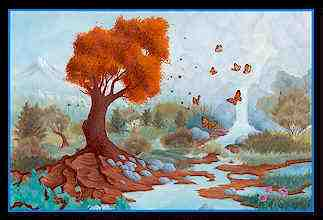

Interessante suas colocações, sempre medito sobre isso.
Vejo que a gentileza, meu termo preferido no lugar de compaixão, com tudo que é vivo de fato é algo que vai brotando quanto mais fluímos no dharma.Não, não se deve matar pernilongos. Inclusive parte da generosidade está em dar sangue a eles. No máximo devem ser utilizados meios que os afastem, nao devemos mata-los.
Penso por aí também, com formigas, baratas, na minha casa quando entra uma daquelas baratas voadoras já nem me mandam matar, sabem que vou no máximo jogar ela para rua.
É interessante que não é um agir por "regra " ou principio, é algo que
absorvi no xamanismo, uma respeito profundo por toda forma de vida.
Quando viajamos xamanisticamente a outros mundos podemos ser lá o
equivalentes a baratas ou pernilongos para os seres daquele mundo.
Quando o xamã que eu estudava fez essa comparação passei a ver com outros olhos esses seres.Não é correto eu matar uma barata no meu banheiro, ou um rato?
Não é correto, mas as vezes pode ser necessário.
Tirar larvas de animais domésticos é outro exemplo.
Já vi meu lama fazer isto.É penso por aí também, tinha um cachorro que vivia pegando berne, aí fica sempre rolando uma escolha.
Interessante que parte do processo de estar vivo é estar sempre fazendo essas escolhas.
E se eu sou médico e dou um antibiótico que mata milhares de bactérias que estão infeccionando o pulmões de um paciente, estou contrariando a nobre senda octúpla?
É de novo a questão da escolha, o médico tem um compromisso com a vida do paciente, não com a vida das bactérias, creio que o reto caminho responde esta questão, não concorda?
Há uma história de uma das encarnações passadas de Buda Sakyamuni em que ele estava em um navio onde um maníaco ia causar um acidente e matar a todos que estavam ali. Buda por clarividência soube da ação e nesse caso matar foi um ato de bodisatva em defesa da vida de muitos outros.
Salvar vidas é muito meritório.
E o dono de uma empresa de desratização e dedetização, deveria abandonar esta profissão se quiser ser budista?
Creio que é uma questão de coerência nesse caso, a medida que você mergulha no Dharma me parece que certas profissões vão ficando inadequadas para a coerência com o caminho escolhido.
Mas algumas profissões atuais são piores do que dedetização ou açougueiro, como por exemplo publicidade.
Rindo muito, minha irmã se formou em publicidade, trabalhou alguns anos na área, mas foi se desgostanto com o estilo da competitividade e com o tipo de ação que lhe era exigido, especialmente porque os melhores clientes da agência onde ela trabalhava eram empresas que iam contra as propostas existenciais dela, que é Taoista.
Jogou tudo para o ar e está estudando fisioterapia.
Creio que isso é coerência.De fato é impossível, tendo um corpo, não matar nenhum ser.
Concordo plenamente, estamos num processo de transformação continua que chamamos precariamente matar.
Sempre estamos matando pequenos organismos ao caminhar, ao respirar, no próprio metabolismo, etc. Além disso, tudo que ingerimos e usamos, quando não causa mortes, causa sofrimentos. São os insetos mortos nas fazendas do algodão de nossas roupas, ou o agricultor pobre que produz nossa cenoura, e o distribuidor que pode estar numa atitude de usura e produzindo mau-carma para ele mesmo. Tudo isso tem um impacto, e a única maneira de lidar com isso é causar o mínimo impacto possível e produzir o maior benefício possível.
É como numa discussão recente sobre comer ou não comer carne.
Coloquei que o pé de alface tinha tanta vontade de ver outro nascer do sol, outro raio de luar, sentir de novo o sereno da noite como o boi.
O fato de nossa sensibilidade não ser capaz de captar a vida nos vegetais não quer dizer que ela não exista.
Creio que a forma de compensarmos e sermos gratos pelo dom da vida que foi sacrificado, seja da alface ou do boi, para que nossa vida continuasse é agir o mais dharmicamente possível.O corpo humano é problemático, mas é o veículo supremo para produzir benefício. E o Buda é um exemplo disso.
Com certeza estar vivo num corpo é uma benção .
Em outros casos, mestres realizados, que estão estáveis na verdade além da vida e da morte, podem matar e cometer todas ações que parecem não-virtuosas aos olhos dos não realizados. Em geral é muito raro, mas há seres desse tipo.
É um campo muito interessante este, creio que o fato de estarem despertos lhes permite fluir por outros campos além do Karma restrito no qual nos debatemos ainda.
Então o melhor, para nós que não temos esse tipo de realização, é não julgar as ações dos outros, procurar manter o mínimo impacto possível, e fazer o melhor para benefício dos seres.
Então estamos de acordo com o ensinamento do Buda.Também penso que é bem por aí, tentar ser o mais "dhármico" em nossos atos, julgar apenas a nós mesmos, nunca os outros, pois o outro é sempre complexo, não sabemos o contexto existencial por detrás do ato aparente.
Paz Profunda...
 Nuvem que Passa
Conheça 0
IMAGICKLAN
A Irmandade das EstrelasO local onde os bruxos conspiram...
Clicke aqui para receber informações

 Volta
para Índice da Tribo
Volta
para Índice Themas Mágickos
Volta
para Índice da Tribo
Volta
para Índice Themas Mágickos
Instituto de Pesquisas Psíquicas Imagick
tel: 0xx.11.3813.4123